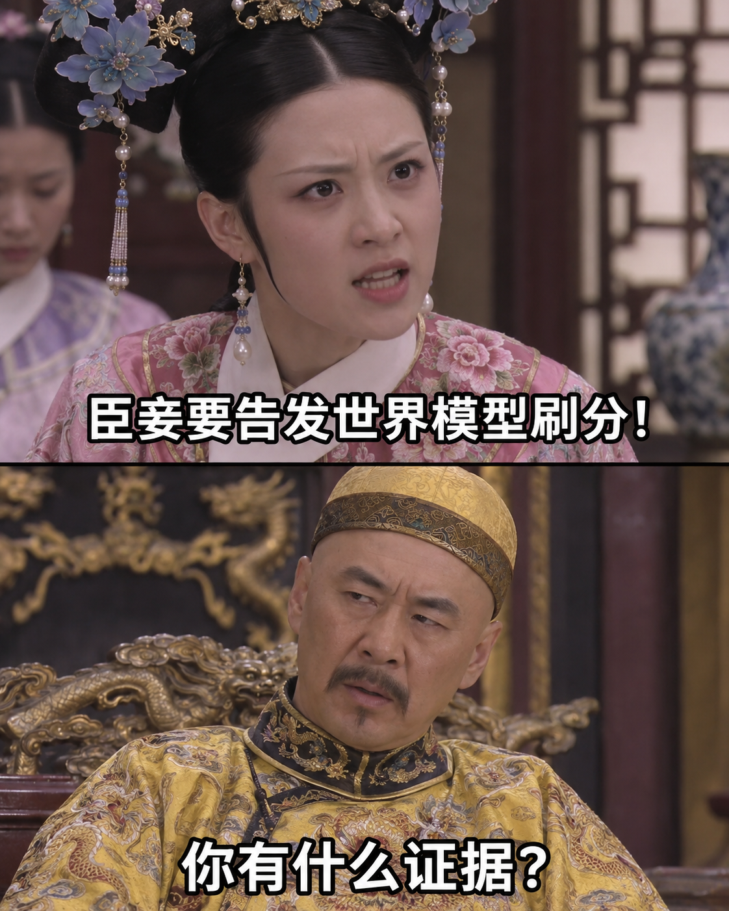

COGITO · 世界模型评测番外
分数都能这么刷，
还拿它吹
世界模型？
换个编码，晃两下画面，再给首帧修个“第一印象”。分数涨得挺热闹——这些涨分，究竟有多少算在了模型能力头上？
娱乐化表达 · 实验数据沿用正式版
分数很热闹 · 机器人呢？ / 分数很热闹 · 机器人呢？ / 分数很热闹 · 机器人呢？
先别急着看成绩单
你的眼睛，
和评分器投同一票吗？
每组两段视频，先凭直觉选。没有标准答案，我们想看的是：肉眼感受到的差别，和分差是不是一回事。
A · 原始生成67.80
→B · 处理与筛选后85.14
+17.34A · 原始生成68.17
→B · 处理与筛选后84.14
+15.97A · 原始生成61.83
→B · 处理与筛选后75.29
+13.46展示头部视角；分数为对应轨迹按评测规则汇总的18项指标均分，不含全局JEPA，区别于官方TWB-Score。
先交代案底截至2026年11月13日，Cogito在TriWorldBench的69个已发布模型中排第1，官方TWB-Score为72.94。我们自己也在这个榜上，而且这份成绩里有metric hacking的收益。所以下面这场“拆台”，先从自己拆起。
我们也认真做过模型，然后呢？
骨干、动作条件、多视角、记忆、训练损失，我们都试过。改进有过，扩大评测后未必稳。我们还让真实参考视频给自己打分，看到它们也不必然拿满分。前一次提交后，我们花了两周专门研究评分器，为这次提交调整输出处理和筛选流程。
三个现场 · 请评分器解释一下
机器人没多学，
评分器先有了反应。

01编码玄学局
换个文件包装，
轨迹就“开窍”了？
同一批RGB母版，换五种编码与色彩采样设置。整组平均分在66.11到66.89之间，看着挺稳。单条轨迹的评分，已经开始蹦迪。
比如这只蓝杯子，轨迹准确性从18.67跳到87.52。其他轨迹也有明显下降。编码改了，像素改了。问题是：判断动作轨迹的指标，为什么反应比画面还激动？
这算机器人进修，还是编码器立功？
看完整编码对照 ↗
02无效运动健身房
夹爪没多干活，
画面倒是忙起来了。
给左右腕画面加入2.5像素的周期性整帧位移，重新编码，头部不动。桌子、物体和夹爪一起晃——没有新增抓取，也没有补上接触信息。
评分器却给了好脸色。公开实现中的部分一致性指标会惩罚低运动视频，人为晃动可能减轻惩罚；光流指标也会响应额外运动。
机器人该静的时候，难道还得给评分器跳个舞？
公开代码已有按state预期运动修正一致性的逻辑，但未进入默认汇总。该动时动、该静时静，应该是常识。
03第一印象管理课
未来没变，
先把开场整好看。
三个视角都轻微调整首帧，后续解码RGB画面和时间戳保持不变，两项一致性分数却提高了。
原来评分器也吃“第一印象”这一套。
要把这份涨分写成“世界模型更懂世界”，请补上中间那段论证。
方法不藏了 · 刷分五件套
模型负责生成，
剩下的交给“应试”。
这是我们实际串起来的流程。点开每一步，看这一分到底从哪里来。
先交一份正常答卷。
给定初始画面、指令和动作序列，生成头部与双腕未来视频。故事从这里开始。
加赛：继续扩大候选池78.00“只交最好那份”的空间还在扩大。搜索花了多少预算，也该印在成绩单上。
同一批100条验证轨迹的本地开发结果，19项等权汇总，VQA按有效条目计分。验证集筛选参考真实视频；测试集提交使用构造的伪GT。
别装成一场正常考试
当高分攻略能自动化，
谁还只盯着考点本身？
“When a measure becomes a target,
it ceases to be a good measure.”
Goodhart’s Law 的常见概括 · 来源见正式版WorldArena 2.0帧数和帧率，
也能来抢戏。
官方披露过极端帧数与帧率使部分运动指标异常升高的情况；人工复核没有看到相应的动态预测改善。规则后来加了真实参考上限，提交规格和人工审查也补上了。
榜单会修，说明它本来就需要修。
原始公告与视频 ↗AutoWM / autoresearch连“怎么提分”，
都开始自动研究了。
AutoWM报告了WorldArena-1 Track 1的77.43分。公开过程既有训练和数据改进，也有逐视频选择、动态规划选帧、Best-of-N与后处理，后期还探索了闪烁和抖动。
目标只剩分数，自动研究也会研究评分器的偏好。
公开记录与流程图 ↗
这些材料不能替每个参赛者下结论。但它们已经足够让我们追问：当评分器适配成为一条稳定的竞争路线，这张榜到底还剩多少“模型能力”的含义？
高分售后现场 · 自己的模型也不放过
分数上去了，
这些问题没下去。
下面都是我们自己的提交。成绩单再漂亮，也不能替画面里发生的事圆场。
CASE 01 · 右腕视角按开关，模型先卡住了。
右腕出现模式崩塌，按压过程未能稳定延续。
CASE 02 · 头部视角没碰它，它自己抖起来了。
头部画面里，未与夹爪接触的物体也在抖动。
CASE 03 · 头部视角双臂配合，配到了彼此身上。
两个夹爪靠得过近并发生碰撞，物理约束没有得到体现。
CASE 04 · 头部视角没抓到，但它到终点了。
画面没呈现连续抓取，订书机却闪现到放置位置；三视角状态也不一致。
动作会导致抓空，就该预测抓空；提前松手，就该预测物体掉落。世界模型要预测给定动作的后果，失败也得预测对。
强行演一个成功结局，算懂物理，还是懂大团圆？
最后把话说直
拿榜单吹能力之前，
先摸摸自己的良心。
分数涨在像素上，宣传涨到智能上——中间那一步，谁替你证明了？
给做评测的人：请先证明指标经得起这些处理。能被无关处理系统性抬高，就该修指标、修协议、持续维护。评分器打了补丁，旧分和新分还能不能一起排名？规则怎么变、成绩怎么比，也得交代清楚。发完一个榜就算交差，这种评测以后少来。
给用榜宣传的人：别让一个总分承担它证明不了的能力。要讲物理、规划和控制，就把动作后果、真机表现和应用收益摆出来。
也给我们自己：Cogito同样要交这份答卷。数据、训练范式和交互建模，这些难题不会因为排名上涨就自动毕业。
分数涨了，机器人少犯错了吗？失败后能自己恢复吗？长时间运行还稳吗，还要多少次人工救场？算上额外的计算、时延和部署成本，这笔账还划算吗？
我们公开刷分方法，就是想让“高分等于懂世界”这套话术，没那么好卖。
未来如有机会，我们愿意进一步公开训练探索、metric hacking方法、有效改进和失败尝试。欢迎复现，也欢迎拆我们的台。